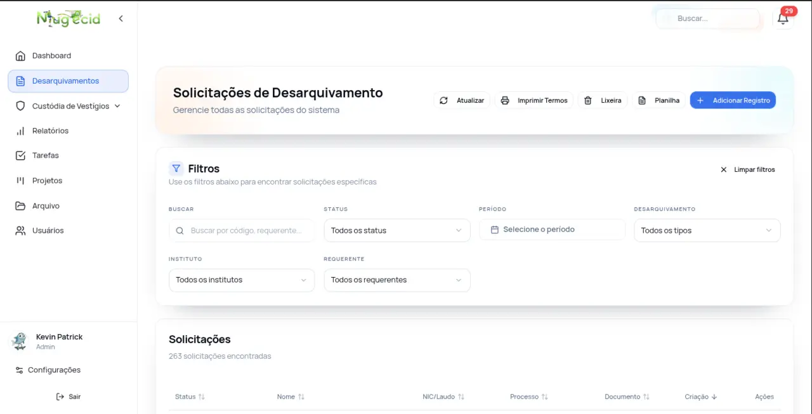
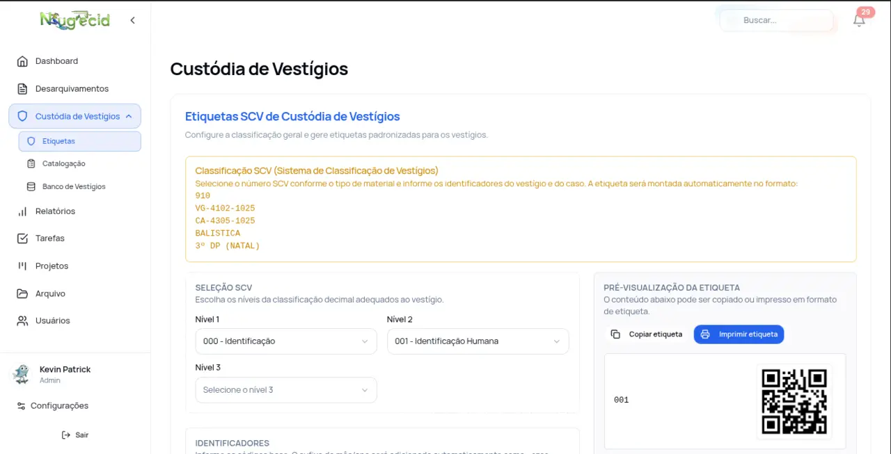
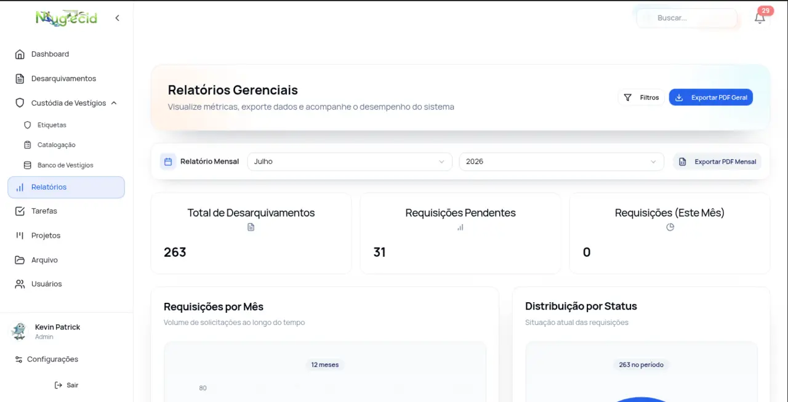

SGC — Sistema de Gestão de Documentos e Desarquivamentos
Sistema que organiza os fluxos de desarquivamento, os documentos e os relatórios operacionais da Polícia Científica do Rio Grande do Norte.
O que o sistema faz
-
Desarquivamentos
Cadastro, acompanhamento, importação em lote (XLSX/CSV), exportação, emissão de termos em PDF/DOCX, comentários, anexos, lixeira e códigos de barras.
-
Dashboard operacional
Estatísticas em tempo real, gráficos e relatórios mensais em PDF.
-
Tarefas e projetos (Kanban)
Colunas com limite de trabalho em andamento, prioridades, prazos, tags, checklists, subtarefas e comentários.
-
Vestígios e custódia
Catalogação, busca por código SCV e estatísticas.
-
Arquivos e pastas
Upload, download, visualização de imagens e organização com tags.
-
Planilhas de controle
Upload e download das planilhas de desarquivamento.
-
Usuários e perfis
Quatro níveis de acesso, preferências, avatar e bloqueio automático.
-
Notificações
No sistema, push no navegador e preferências por canal e tipo.
-
Busca unificada
Busca em texto completo em todo o acervo do sistema.
-
Auditoria e backup
Trilha de auditoria das ações e rotina de backup do banco de dados.
Stack técnica
| Camada | Tecnologia |
|---|---|
| Backend | NestJS, TypeScript, TypeORM |
| Frontend | React, Vite, TypeScript, TailwindCSS |
| Banco de dados | PostgreSQL |
| Cache e sessões | Redis |
| Infraestrutura | Docker Compose, Nginx |
| Testes | Jest, Vitest, Testing Library, Playwright |
Integrações e recursos
-
SEI
Captura de processos do sistema eletrônico de informações.
-
Escavador SEIRN
Recebimento de publicações por webhook.
-
Metabase
Painéis de business intelligence.
-
OCR
Reconhecimento de texto em documentos digitalizados.
Telas do sistema



